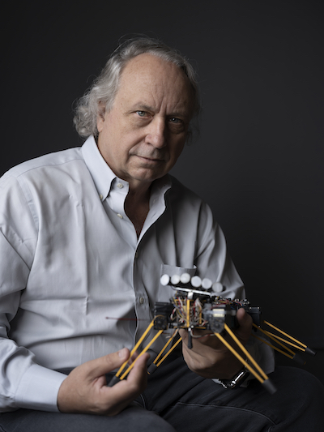
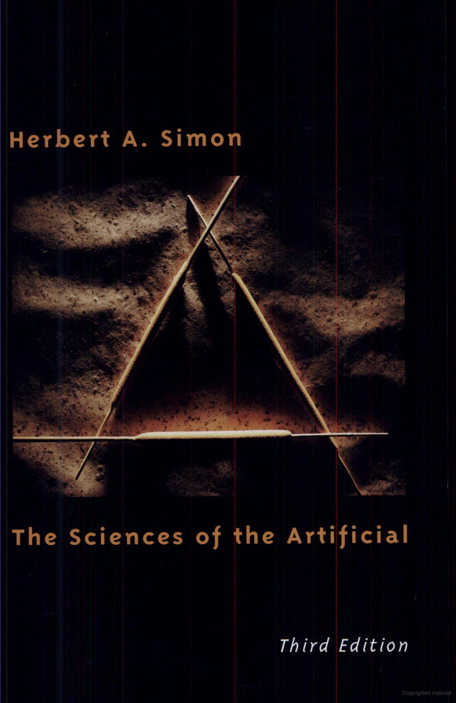
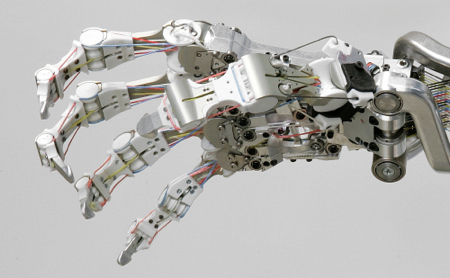
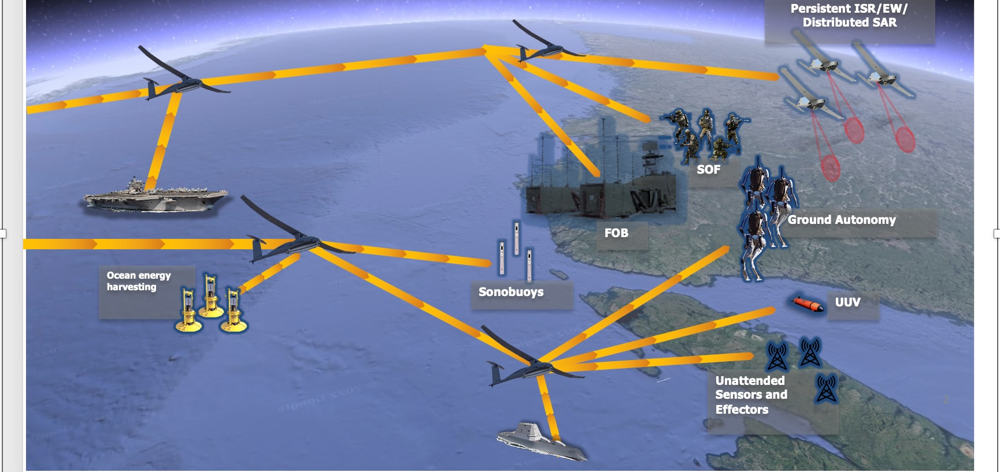

To be fair, there are many, many people who are wrong about AI. But you probably recognize these guys.
See my advisor’s advisor’s dated predictions:

https://rodneybrooks.com/my-dated-predictions/
Most of the truly groundbreaking discoveries in AI are yet to be made.
Many AI courses focus on the current thing, e.g., statistical machine learning, and neural networks.
This course covers the full spectrum of AI so that you’re ready to spot and develop promising new directions.
We’ll spend little time on machine learning, and barely touch on neural networks.

1Artificial
Intelligence
Rationality
Decompose AI into thinking and acting, and define standards of performance as fidelity to humans and quantitative rationality.
Turing test
Total Turing test
Nobody cares about Turing tests.
“Doing the right thing.”
Acting rationally - goal maximizing behavior
Thinking rationally - “laws of thought”
Thinking is nothing more than acting in an imagined space.
– Konrad Lorenz via Bernhard Schölkopf
Such a rich tapestry!
What are the formal rules to draw valid conclusions?
What can be computed?
How do we reason with uncertain information?
Logic
Probability and statistics
Algorithms, computability and complexity
Optimization
Acting rationally
How do brains process information?
How do humans and animals think and act?
Cognitive modeling
Behaviorism
How can we build an efficient computer?
High performance computing
Quantum computing
How can artifacts operate under their own control?



Turing award winners:
AI lament: once an AI problem is solved, it’s no longer considered AI.
MucCulloch, Pitts, Hebb (1943-1949)
1956 Dartmouth AI Workshop
Symbolic AI (1952-1969) – “clever Lisp programs”
First AI Winter (1966-1973)
Expert Systems (1969-1986)
Second AI Winter (1986)
Return of neural networks (1986-present)
Probabilistic reasoning and machine learning (1987-present)
Big data (2001-present)
Deep learning (2011-present)
https://mitpress.mit.edu/9780262691918/the-sciences-of-the-artificial/↩︎